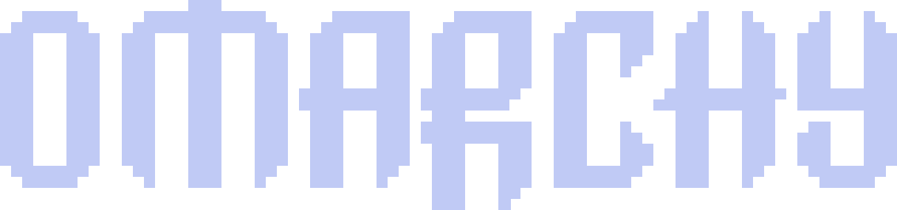

v0.45.1 Linux Native PTY

Omarchy Online
Hyprland Dwindle
Native Linux VPS
Zero Docker Overhead
Tokyo Night
Run an authentic Arch Linux & Hyprland tiling workspace directly in your browser. Powered by native host Zellij Web PTY and a Caddy TLS reverse proxy, consuming under 30MB of RAM.
Core Capabilities
Hyprland Dwindle Tiling
Binary Space Partitioning (BSP) tree algorithm with 10px outer gaps, 5px inner gaps, and active #7aa2f7 glowing borders.
Zero Docker Containers
Runs directly as native host processes on Ubuntu/Debian/Arch VPS. Direct access to system tools, compilers, and hardware with <30MB RAM footprint.
Stateful Session Persistence
Backed by Zellij Web Client. Terminal jobs, builds, and processes continue running uninterrupted when the browser tab closes or reconnects.
Official Tokyo Night Styling
Extracted directly from official Omarchy configs. Includes 4K curated wallpapers, Catppuccin Mocha theme switcher, and Waybar status bar.
Walker App Launcher
Instant fuzzy application and workspace search (SUPER + SPACE). Spawn Neovim, Btop, Lazygit, or terminal windows with a single keystroke.
9 Isolated Workspaces
Workspaces 1 through 9 each maintain independent Dwindle trees and window sets, with dynamic Waybar pill dot indicators.
Architecture Comparison
| Dimension | Traditional Docker / VNC | Omarchy Online |
|---|---|---|
| Host Footprint | 500MB ~ 2GB RAM (KVM / Docker / X11) | <30MB RAM (Native Linux Binary) |
| Latency & Typing | Compressed bitmap video streaming (~100ms) | Native WebGL character rendering (<5ms) |
| Disconnection | VNC sessions can crash or desync | Zellij PTY server daemon (Zero Loss) |
| Environment Access | Isolated in container containerized paths | Direct host shell ($HOME, packages, tools) |
Essential Shortcuts
Spawn Terminal
SUPER + RETURN
Walker Launcher
SUPER + SPACE
Switch Workspace
SUPER + 1..9
Toggle Desktop
SUPER + D
Close Focused
SUPER + Q
Fullscreen Mode
SUPER + F
Deploy to Linux VPS
# 1. Clone repository git clone https://github.com/zhangcy122/omarchy-online.git cd omarchy-online && ./scripts/install_zellij.sh # 2. Launch Caddy TLS gateway & Zellij PTY server ./scripts/run_omarchy_web.sh start